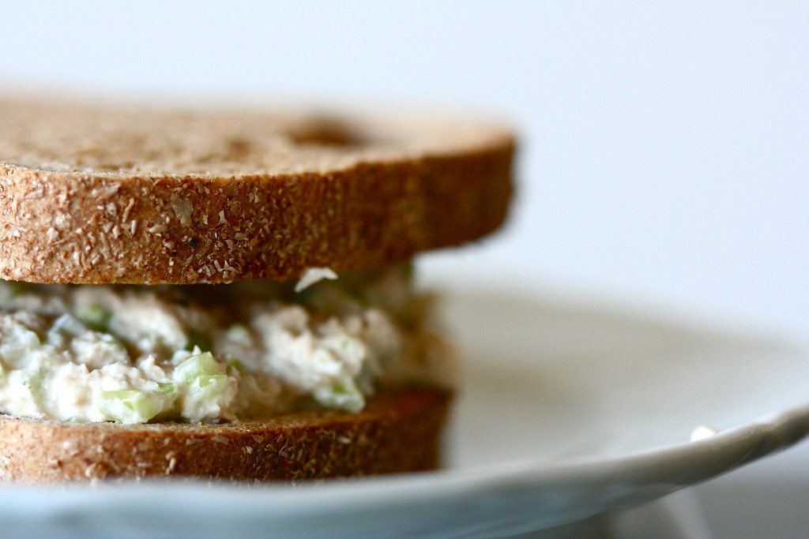

Home
Tuna Mayo Sandwich Filling

I can't lie, gang, this one is kind of a (forgive me) filler recipe. But! It is yummy and reminds me of my final year of university when this was part of my lunch pretty much everyday.
Ingredients
- 1 tin tuna
- some mayonnaise? Start with 2tbsp and see how you go
- 1 lemon, juiced
- black pepper
Method
- Drain the tuna and whack it in a bowl with the mayo and half the lemon juice.
- Mix it up and taste it. Add more mayo if there's not enough to engulf the tuna. Add more juice and pepper if you want.
- Use for sandwiches or as a pasta topping or mixed with whatever salad stuff you have in your fridge or whatever! Enjoy!